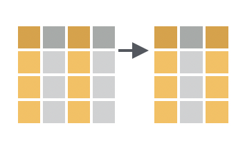
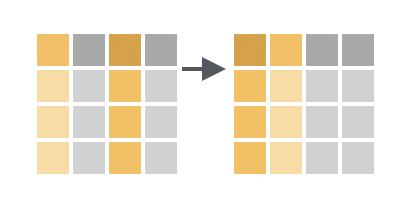
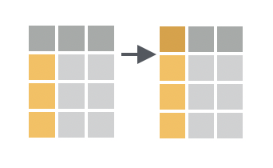
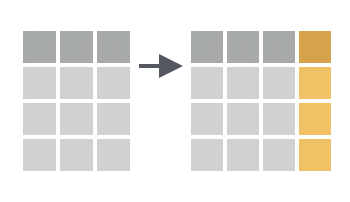
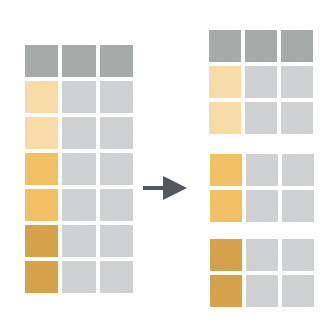

Daten transformieren mit {dplyr}
Unit 3
Ziele für heute
- Befehle zur Transformation von Spalten identifizieren und anwenden
- Befehle zur Gruppierung, Zusammenfassung und zum Zählen von Daten identifizieren und anwenden
- erläutern, wie man mehrere Befehle kombiniert
Daten-Transformation mit {dplyr}

Zeilen: filtern, anordnen
Spalten: auswählen, anordnen, umbenennen, erstellen
Gruppen: zusammenfassen, zählen
Tabellen: zusammenfügen
Spalten transformieren
select(), relocate(), rename(), mutate()
Daten
Rows: 87
Columns: 14
$ name <chr> "Luke Skywalker", "C-3PO", "R2-D2", "Darth Vader", "Leia Or…
$ height <int> 172, 167, 96, 202, 150, 178, 165, 97, 183, 182, 188, 180, 2…
$ mass <dbl> 77.0, 75.0, 32.0, 136.0, 49.0, 120.0, 75.0, 32.0, 84.0, 77.…
$ hair_color <chr> "blond", NA, NA, "none", "brown", "brown, grey", "brown", N…
$ skin_color <chr> "fair", "gold", "white, blue", "white", "light", "light", "…
$ eye_color <chr> "blue", "yellow", "red", "yellow", "brown", "blue", "blue",…
$ birth_year <dbl> 19.0, 112.0, 33.0, 41.9, 19.0, 52.0, 47.0, NA, 24.0, 57.0, …
$ sex <chr> "male", "none", "none", "male", "female", "male", "female",…
$ gender <chr> "masculine", "masculine", "masculine", "masculine", "femini…
$ homeworld <chr> "Tatooine", "Tatooine", "Naboo", "Tatooine", "Alderaan", "T…
$ species <chr> "Human", "Droid", "Droid", "Human", "Human", "Human", "Huma…
$ films <list> <"A New Hope", "The Empire Strikes Back", "Return of the J…
$ vehicles <list> <"Snowspeeder", "Imperial Speeder Bike">, <>, <>, <>, "Imp…
$ starships <list> <"X-wing", "Imperial shuttle">, <>, <>, "TIE Advanced x1",…Spalten auswählen
select(Datensatz, Spalten)
Spalten auswählen
Spalten auswählen
# A tibble: 87 × 13
name mass hair_color skin_color eye_color birth_year sex gender homeworld
<chr> <dbl> <chr> <chr> <chr> <dbl> <chr> <chr> <chr>
1 Luke… 77 blond fair blue 19 male mascu… Tatooine
2 C-3PO 75 <NA> gold yellow 112 none mascu… Tatooine
3 R2-D2 32 <NA> white, bl… red 33 none mascu… Naboo
4 Dart… 136 none white yellow 41.9 male mascu… Tatooine
5 Leia… 49 brown light brown 19 fema… femin… Alderaan
6 Owen… 120 brown, gr… light blue 52 male mascu… Tatooine
7 Beru… 75 brown light blue 47 fema… femin… Tatooine
8 R5-D4 32 <NA> white, red red NA none mascu… Tatooine
9 Bigg… 84 black light brown 24 male mascu… Tatooine
10 Obi-… 77 auburn, w… fair blue-gray 57 male mascu… Stewjon
# ℹ 77 more rows
# ℹ 4 more variables: species <chr>, films <list>, vehicles <list>,
# starships <list>Spalten auswählen
Spalten auswählen
Spalten auswählen
# A tibble: 87 × 3
hair_color skin_color eye_color
<chr> <chr> <chr>
1 blond fair blue
2 <NA> gold yellow
3 <NA> white, blue red
4 none white yellow
5 brown light brown
6 brown, grey light blue
7 brown light blue
8 <NA> white, red red
9 black light brown
10 auburn, white fair blue-gray
# ℹ 77 more rowsSelection helpers: contains("s"), where(is.numeric), everything()
Eine Spalte verschieben
relocate(Datensatz, Spalten_zu_verschieben)
Eine Spalte verschieben
# A tibble: 87 × 14
name height mass hair_color skin_color eye_color birth_year sex gender
<chr> <int> <dbl> <chr> <chr> <chr> <dbl> <chr> <chr>
1 Luke Sk… 172 77 blond fair blue 19 male mascu…
2 C-3PO 167 75 <NA> gold yellow 112 none mascu…
3 R2-D2 96 32 <NA> white, bl… red 33 none mascu…
4 Darth V… 202 136 none white yellow 41.9 male mascu…
5 Leia Or… 150 49 brown light brown 19 fema… femin…
6 Owen La… 178 120 brown, gr… light blue 52 male mascu…
7 Beru Wh… 165 75 brown light blue 47 fema… femin…
8 R5-D4 97 32 <NA> white, red red NA none mascu…
9 Biggs D… 183 84 black light brown 24 male mascu…
10 Obi-Wan… 182 77 auburn, w… fair blue-gray 57 male mascu…
# ℹ 77 more rows
# ℹ 5 more variables: homeworld <chr>, species <chr>, films <list>,
# vehicles <list>, starships <list># A tibble: 87 × 14
mass name height hair_color skin_color eye_color birth_year sex gender
<dbl> <chr> <int> <chr> <chr> <chr> <dbl> <chr> <chr>
1 77 Luke Sk… 172 blond fair blue 19 male mascu…
2 75 C-3PO 167 <NA> gold yellow 112 none mascu…
3 32 R2-D2 96 <NA> white, bl… red 33 none mascu…
4 136 Darth V… 202 none white yellow 41.9 male mascu…
5 49 Leia Or… 150 brown light brown 19 fema… femin…
6 120 Owen La… 178 brown, gr… light blue 52 male mascu…
7 75 Beru Wh… 165 brown light blue 47 fema… femin…
8 32 R5-D4 97 <NA> white, red red NA none mascu…
9 84 Biggs D… 183 black light brown 24 male mascu…
10 77 Obi-Wan… 182 auburn, w… fair blue-gray 57 male mascu…
# ℹ 77 more rows
# ℹ 5 more variables: homeworld <chr>, species <chr>, films <list>,
# vehicles <list>, starships <list>Eine Spalte verschieben
# A tibble: 87 × 14
name mass height hair_color skin_color eye_color birth_year sex gender
<chr> <dbl> <int> <chr> <chr> <chr> <dbl> <chr> <chr>
1 Luke Sk… 77 172 blond fair blue 19 male mascu…
2 C-3PO 75 167 <NA> gold yellow 112 none mascu…
3 R2-D2 32 96 <NA> white, bl… red 33 none mascu…
4 Darth V… 136 202 none white yellow 41.9 male mascu…
5 Leia Or… 49 150 brown light brown 19 fema… femin…
6 Owen La… 120 178 brown, gr… light blue 52 male mascu…
7 Beru Wh… 75 165 brown light blue 47 fema… femin…
8 R5-D4 32 97 <NA> white, red red NA none mascu…
9 Biggs D… 84 183 black light brown 24 male mascu…
10 Obi-Wan… 77 182 auburn, w… fair blue-gray 57 male mascu…
# ℹ 77 more rows
# ℹ 5 more variables: homeworld <chr>, species <chr>, films <list>,
# vehicles <list>, starships <list>Eine Spalte umbenennen
rename(Datensatz, neuer_name = alter_name)
Eine Spalte umbenennen
# A tibble: 87 × 14
name height gewicht hair_color skin_color eye_color birth_year sex gender
<chr> <int> <dbl> <chr> <chr> <chr> <dbl> <chr> <chr>
1 Luke … 172 77 blond fair blue 19 male mascu…
2 C-3PO 167 75 <NA> gold yellow 112 none mascu…
3 R2-D2 96 32 <NA> white, bl… red 33 none mascu…
4 Darth… 202 136 none white yellow 41.9 male mascu…
5 Leia … 150 49 brown light brown 19 fema… femin…
6 Owen … 178 120 brown, gr… light blue 52 male mascu…
7 Beru … 165 75 brown light blue 47 fema… femin…
8 R5-D4 97 32 <NA> white, red red NA none mascu…
9 Biggs… 183 84 black light brown 24 male mascu…
10 Obi-W… 182 77 auburn, w… fair blue-gray 57 male mascu…
# ℹ 77 more rows
# ℹ 5 more variables: homeworld <chr>, species <chr>, films <list>,
# vehicles <list>, starships <list>Eine neue Spalte erstellen
mutate(Datensatz, neue_spalte = Wert_neuer_spalte)
Eine neue Spalte erstellen
# A tibble: 87 × 15
name height mass hair_color skin_color eye_color birth_year sex gender
<chr> <int> <dbl> <chr> <chr> <chr> <dbl> <chr> <chr>
1 Luke Sk… 172 77 blond fair blue 19 male mascu…
2 C-3PO 167 75 <NA> gold yellow 112 none mascu…
3 R2-D2 96 32 <NA> white, bl… red 33 none mascu…
4 Darth V… 202 136 none white yellow 41.9 male mascu…
5 Leia Or… 150 49 brown light brown 19 fema… femin…
6 Owen La… 178 120 brown, gr… light blue 52 male mascu…
7 Beru Wh… 165 75 brown light blue 47 fema… femin…
8 R5-D4 97 32 <NA> white, red red NA none mascu…
9 Biggs D… 183 84 black light brown 24 male mascu…
10 Obi-Wan… 182 77 auburn, w… fair blue-gray 57 male mascu…
# ℹ 77 more rows
# ℹ 6 more variables: homeworld <chr>, species <chr>, films <list>,
# vehicles <list>, starships <list>, height_m <dbl>Eine neue Spalte erstellen
# A tibble: 87 × 15
name height height_m mass hair_color skin_color eye_color birth_year sex
<chr> <int> <dbl> <dbl> <chr> <chr> <chr> <dbl> <chr>
1 Luke … 172 1.72 77 blond fair blue 19 male
2 C-3PO 167 1.67 75 <NA> gold yellow 112 none
3 R2-D2 96 0.96 32 <NA> white, bl… red 33 none
4 Darth… 202 2.02 136 none white yellow 41.9 male
5 Leia … 150 1.5 49 brown light brown 19 fema…
6 Owen … 178 1.78 120 brown, gr… light blue 52 male
7 Beru … 165 1.65 75 brown light blue 47 fema…
8 R5-D4 97 0.97 32 <NA> white, red red NA none
9 Biggs… 183 1.83 84 black light brown 24 male
10 Obi-W… 182 1.82 77 auburn, w… fair blue-gray 57 male
# ℹ 77 more rows
# ℹ 6 more variables: gender <chr>, homeworld <chr>, species <chr>,
# films <list>, vehicles <list>, starships <list>Mehrere Spalten erstellen
# A tibble: 87 × 16
name height mass height_m bmi hair_color skin_color eye_color birth_year
<chr> <int> <dbl> <dbl> <dbl> <chr> <chr> <chr> <dbl>
1 Luke … 172 77 1.72 26.0 blond fair blue 19
2 C-3PO 167 75 1.67 26.9 <NA> gold yellow 112
3 R2-D2 96 32 0.96 34.7 <NA> white, bl… red 33
4 Darth… 202 136 2.02 33.3 none white yellow 41.9
5 Leia … 150 49 1.5 21.8 brown light brown 19
6 Owen … 178 120 1.78 37.9 brown, gr… light blue 52
7 Beru … 165 75 1.65 27.5 brown light blue 47
8 R5-D4 97 32 0.97 34.0 <NA> white, red red NA
9 Biggs… 183 84 1.83 25.1 black light brown 24
10 Obi-W… 182 77 1.82 23.2 auburn, w… fair blue-gray 57
# ℹ 77 more rows
# ℹ 7 more variables: sex <chr>, gender <chr>, homeworld <chr>, species <chr>,
# films <list>, vehicles <list>, starships <list>Praktikum: Spalten-Transformation mit {dplyr}
prak-03a-spalten-abstimmung.qmd
20:00 Break ☕ 🍵 🍜
10:00
The Pipe
The Pipe |>
filter: mass < 300mutate: height_m, bmiselect: name, species, sex, bmiarrange: desc(bmi)
# A tibble: 58 × 4
name species sex bmi
<chr> <chr> <chr> <dbl>
1 Dud Bolt Vulptereen male 50.9
2 Yoda Yoda's species male 39.0
3 Owen Lars Human male 37.9
4 IG-88 Droid none 35
5 R2-D2 Droid none 34.7
6 Grievous Kaleesh male 34.1
7 R5-D4 Droid none 34.0
8 Jek Tono Porkins <NA> <NA> 34.0
9 Darth Vader Human male 33.3
10 Sebulba Dug male 31.9
# ℹ 48 more rowsThe Pipe |>
filter: mass < 300mutate: height_m, bmiselect: name, species, sex, bmiarrange: desc(bmi)
The Pipe |>
The Pipe %>%

Ctrl + ⇧ + M = |>
Pipe vs Layer
|>in{dplyr}pipelines: die Ausgabe der vorherigen Codezeile als erste Eingabe der nächsten Codezeile
+inggplot2für Schichten: wir erstellen Schichten die durch+getrennt sind
Praktikum: {dplyr} und |>
prak-03a-spalten-abstimmung.qmd
10:00 Daten-Transformation mit {dplyr}
Zeilen: auswählen, anordnen
Spalten: auswählen, anordnen, umbenennen, erstellen
Gruppen: zusammenfassen, zählen
Tabellen: zusammenfügen.
Daten gruppieren mit {dplyr}
group_by(), summarise(), count()
Daten
Rows: 344
Columns: 8
$ species <fct> Adelie, Adelie, Adelie, Adelie, Adelie, Adelie, Adel…
$ island <fct> Torgersen, Torgersen, Torgersen, Torgersen, Torgerse…
$ bill_length_mm <dbl> 39.1, 39.5, 40.3, NA, 36.7, 39.3, 38.9, 39.2, 34.1, …
$ bill_depth_mm <dbl> 18.7, 17.4, 18.0, NA, 19.3, 20.6, 17.8, 19.6, 18.1, …
$ flipper_length_mm <int> 181, 186, 195, NA, 193, 190, 181, 195, 193, 190, 186…
$ body_mass_g <int> 3750, 3800, 3250, NA, 3450, 3650, 3625, 4675, 3475, …
$ sex <fct> male, female, female, NA, female, male, female, male…
$ year <int> 2007, 2007, 2007, 2007, 2007, 2007, 2007, 2007, 2007…Daten zusammenfassen
Daten zusammenfassen
Daten gruppieren
group_by(Datensatz, Gruppierungsvariablen)
Daten gruppieren
species island bill_length_mm bill_depth_mm
Adelie :152 Biscoe :168 Min. :32.10 Min. :13.10
Chinstrap: 68 Dream :124 1st Qu.:39.23 1st Qu.:15.60
Gentoo :124 Torgersen: 52 Median :44.45 Median :17.30
Mean :43.92 Mean :17.15
3rd Qu.:48.50 3rd Qu.:18.70
Max. :59.60 Max. :21.50
NA's :2 NA's :2
flipper_length_mm body_mass_g sex year
Min. :172.0 Min. :2700 female:165 Min. :2007
1st Qu.:190.0 1st Qu.:3550 male :168 1st Qu.:2007
Median :197.0 Median :4050 NA's : 11 Median :2008
Mean :200.9 Mean :4202 Mean :2008
3rd Qu.:213.0 3rd Qu.:4750 3rd Qu.:2009
Max. :231.0 Max. :6300 Max. :2009
NA's :2 NA's :2 Daten gruppieren
# A tibble: 344 × 8
# Groups: species [3]
species island bill_length_mm bill_depth_mm flipper_length_mm body_mass_g
<fct> <fct> <dbl> <dbl> <int> <int>
1 Adelie Torgersen 39.1 18.7 181 3750
2 Adelie Torgersen 39.5 17.4 186 3800
3 Adelie Torgersen 40.3 18 195 3250
4 Adelie Torgersen NA NA NA NA
5 Adelie Torgersen 36.7 19.3 193 3450
6 Adelie Torgersen 39.3 20.6 190 3650
7 Adelie Torgersen 38.9 17.8 181 3625
8 Adelie Torgersen 39.2 19.6 195 4675
9 Adelie Torgersen 34.1 18.1 193 3475
10 Adelie Torgersen 42 20.2 190 4250
# ℹ 334 more rows
# ℹ 2 more variables: sex <fct>, year <int>Eine Gruppe zusammenfassen
Eine Gruppe zusammenfassen
Eine Gruppe mehrfach zusammenfassen
Mehrere Gruppen zusammenfassen
Frequenzen
group_by() + summarise() + n() ↔︎️ count()
Most of data science is counting, and sometimes dividing.
– Hadley Wickham
Praktikum 03b: Gruppen zusammenfassen
20:00 Break ☕ 🍵 🍜
10:00
Praktikum 03c: Gebäude und Energiequelle
20:00 Danke! 🌓
Slides created via revealjs and Quarto.
Access slides as PDF.
All material is licensed under Creative Commons Attribution Share Alike 4.0 International.

rstatsBL - Data Science mit R